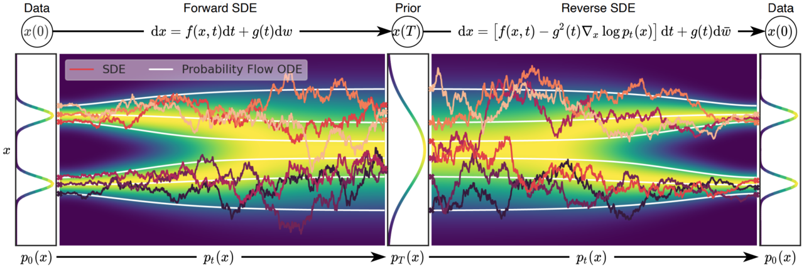

CS492(C): Diffusion and Flow Models
Minhyuk Sung, KAIST, Fall 2025
1
Time & Location
Time: Mon/Wed 10:30 a.m. - 11:45 a.m. (KST)
Location: E3-5 Room 210.
Description
Recent breakthroughs in generative AI have amazed people with the unprecedented quality of generated images and videos, as exemplified by SORA, Midjourney, StableDiffusion, and many others. These advancements have been achieved using diffusion models, which have become the new standard technique for generative models. Diffusion models offer numerous advantages, including superior performance in the quality of generated outputs, as well as capabilities in conditional generation, personalization, zero-shot manipulation, and knowledge distillation.
In this course, we will discuss the theoretical foundations and practical applications of diffusion models. While the goal is to cover both theory and practice, the focus will be on gaining hands-on experience by implementing diffusion model techniques in programming assignments and solving real-world problems in the course project.
Prerequisites
- Solid background in machine learning and deep learning
- Hands-on experience with neural network implementation
- Recommended prior courses:
- MAS.20050 Probability and Statistics
- MAS.20001 Differential Equations and Applications
- CS.30701 Introduction to Deep Learning
Course Staff
Instructor: Minhyuk Sung (mhsung@kaist.ac.kr)
Course Assistants:
- Juil Koo (63days@kaist.ac.kr)
- Seungwoo Yoo (dreamy1534@kaist.ac.kr)
- Yuseung Lee (phillip0701@kaist.ac.kr)
- Yunhong Min (dbsghd363@kaist.ac.kr)
Past Years
Grading
- In-Class Participation: 10%
- In-Class Tests: 20%
- Programming Assignments: 20%
- Image Generation Challenge: 25%
- Visual Generation Contest: 25%
Useful Resources
- Fall 2024 Course Webpage
- SIGGRAPH 2025 Course: Diffusion Models for Image and Video Generation: From Foundations to Emerging Directions
- SIGGRAPH 2024 Course: Diffusion Models for Visual Content Generation
- CVPR 2023 Tutorial: Denoising Diffusion Models: A Generative Learning Big Bang
- "Generative Modeling by Estimating Gradients of the Data Distribution", Yang Song.
- "What are Diffusion Models?", Lilian Weng.
- "Understanding Diffusion Models: A Unified Perspective". Calvin Luo.
- "Tutorial on Diffusion Models for Imaging and Vision". Stanley H. Chan.
- "Step-by-Step Diffusion: An Elementary Tutorial". Preetum Nakkiran, Arwen Bradley, Hattie Zhou, and Madhu Advani.
Important Dates
ALL ASSIGNMENTS ARE DUE 23:59 KST.
(Subject to Change)
- Project Team Sign-Up: Due Sep 30 (Tue)
- 1st Programming Assignment: Due Oct 2 (Thu)
- 2nd Programming Assignment: Due Nov 1 (Sat)
- 3rd Programming Assignment: Due Nov 22 (Sat)
- Image Generation Challenge Submission: Due Nov 15 (Sat)
- Visual Generation Contest Submission: Due Dec 06 (Sat)
Schedule
(Subject to Change)
| Week | Mon | Topic | Wed | Topic |
|---|---|---|---|---|
| 1 | Sep 01 | Course Introduction Slides |
Sep 03 | Introduction to Generative Models Slides Recording |
| 2 | Sep 08 | DDPM 1 Slides Recording |
Sep 10 | DDPM 2 Slides Recording |
| 3 | Sep 15 | Score-Based Models Slides Recording |
Sep 17 | DDIM Slides Recording |
| 4 | Sep 22 | Conditional Generation / Latent Diffusion Slides Recording |
Sep 24 | Assignment 1 Session Slides |
| 5 | Sep 29 | Diffusion Models in Continuous Time Slides Recording |
Oct 01 | Demo Session |
| 6 | Oct 06 | No Class (Chuseok) | Oct 08 | No Class (Chuseok) |
| 7 | Oct 13 | ODE Solvers Slides Recording |
Oct 15 | Assignment 2 Session Slides |
| 8 | Oct 20 | No Class (Midterm Week) | Oct 22 | No class (Midterm Week) |
| 9 | Oct 27 | In-Class Test 1 | Oct 29 | Flow Matching 1 Slides Recording |
| 10 | Nov 03 | Flow Matching 2 Slides Recording |
Nov 05 | Assignment 3 Session |
| 11 | Nov 10 | Inference-Time Guidance 1 Slides Recording |
Nov 12 | No Class (Break) |
| 12 | Nov 17 | Inference-Time Guidance 2 Slides Recording |
Nov 19 | Score Distillation Coarse Wrap-Up Slides Recording |
| 13 | Nov 24 | Guest Lecture 1 Subham Sahoo Recording |
Nov 26 | Guest Lecture 2 Philipp Henzler Recording |
| 14 | Dec 01 | In-Class Test 2 | Dec 03 | No Class (Break) |
| 15 | Dec 08 | Project Presentations 1 | Dec 10 | Project Presentations 2 |
| 16 | Dec 15 | No Class (Final Week) | Dec 17 | No Class (Final Week) |
AI Coding Assistant Tool Policy
You are allowed (and even encouraged) to utilize AI coding assistant tools, such as ChatGPT, Copilot, Codex, and Code Intelligence, for your programming assignments and projects. Utilizing AI coding assistant tools will not be deemed as plagiarism. However, it is still strictly prohibited to directly copy code from the Internet or from someone else. Doing so will lead to a score of zero and a report to the university.
-
Teaser image credits: Song et al., Score-Based Generative Modeling through Stochastic Differential Equations, ICLR 2021.
↩